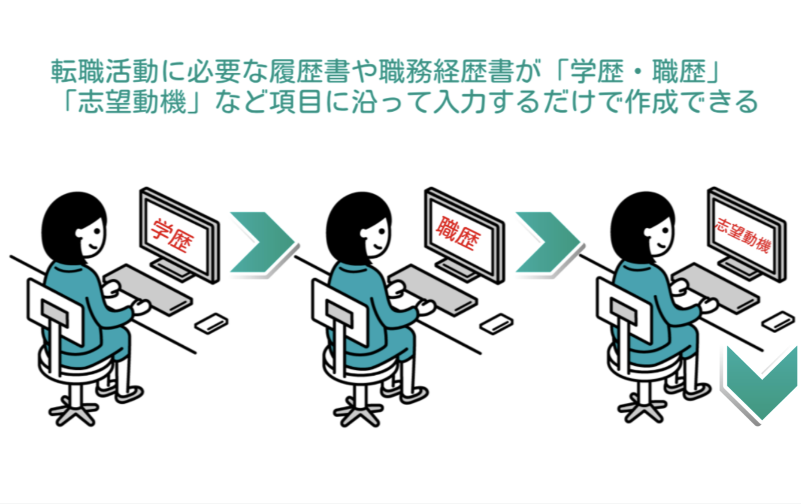
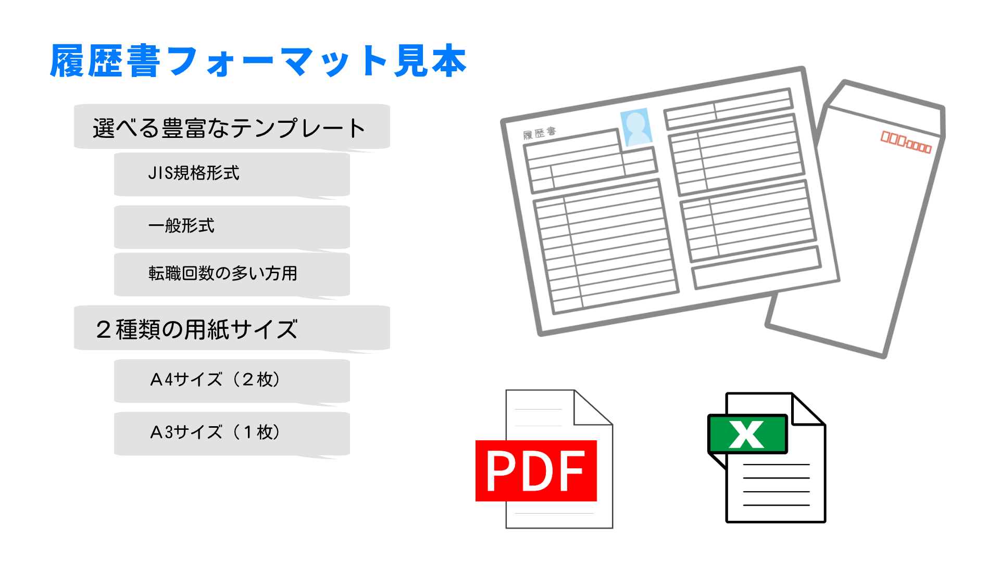
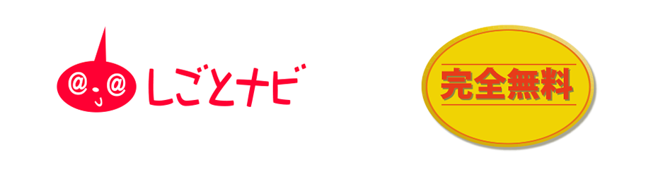
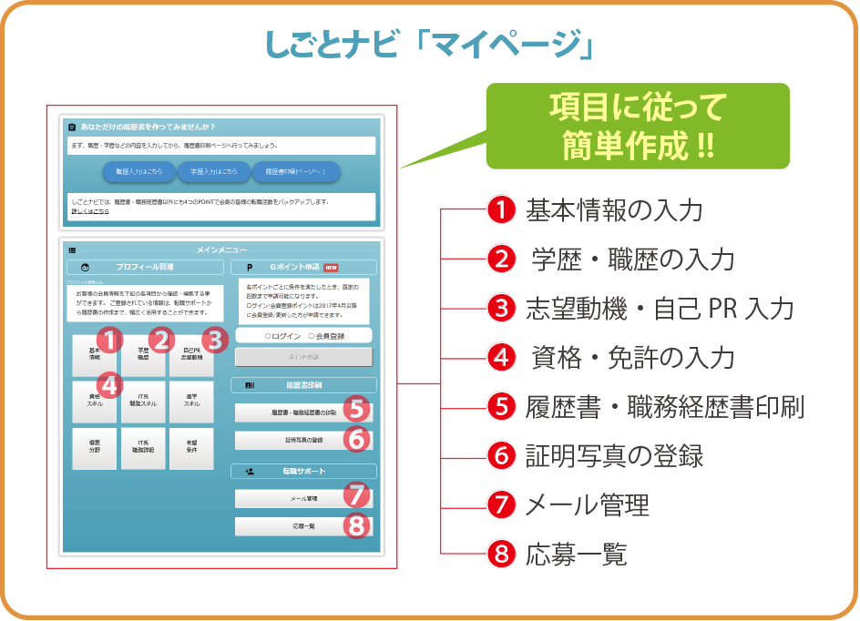

しごとナビ ＷＥＢ履歴書の特徴
履歴書フォーマット見本

豊富なテンプレートに２種類の用紙サイズをご用意しています。印刷、メール添付に 最適なPDFやパソコンでの管理に便利なExcel形式での出力が可能です。 写真登録機能によって証明写真付の履歴書が簡単に作成できます。 便利な「コンビニプリント」にも対応しています。
履歴書フォーマット見本

履歴書自動作成機能について
完全無料の転職サイト「しごとナビ」には転職を支援する便利な機能が満載。履歴書作成から印刷まで簡単操作でOK
「しごとナビ」のマイページには求職者様に必要な機能が集約されています。 フォームに従ってプロフィールや職務経歴などを入力するだけで履歴書や 職務経歴書として自動で作成でき、印刷やメール添付に適した応募書類としてご利用いただけます。
しごとナビの転職サポート

総合人材サービスサイト
マイページにはあなたの転職を
総合人材サービスサイト
「しごとナビ」
プロの専任スタッフがあなたの転職を徹底的に サポート！
新鮮な求人 情報からあなたにぴったりの仕事が見つかる！
求人企業からのスカウトが受けられる！
マイページにはあなたの転職を
サポートする 便利な機能が満載！
プロフィール・スケジュール・メール・マッチング
求人一覧などを一元管理
履歴書・職務経歴書の自動作成およびテンプレートの
ダウンロードが可能
しごとナビに登録・ご利用毎にGポイントが貯まる
「しごとナビ」マイページのポイント

- 項目に従って記入するだけの簡単操作
- スマートフォンからも作成可能
- 「入学/卒業年度自動計算表」搭載
- 「西暦/和暦早見表」搭載
- Excelファイル形式でらくらく編集
- 撮影した証明写真画像を履歴書に反映
- メール送信時も万全のセキュリティ
- お近くのコンビ二から印刷できる
- 「しごとナビ」と連動した転職サポート
履歴書の作成ポイント
履歴書を書き始める前に確認すべきポイントや注意点など
履歴書作成の際、注意すべきポイントなどを簡単にまとめました。 ぜひご参照いただき採用担当者に好印象を与える履歴書の作成を目指してお役立てください。 また「しごとナビ」サイト内では、さらに詳しい作成方法や疑問・質問に対するＱ＆Ａも 記載しておりますので、こちらも合わせてご覧ください。

＜基本情報＞
提出日の日付（郵送の場合は投函日）にします。面接に持って行く場合は当日の日付を記入しましょう。年号は元号表記が一般的ですが、履歴書内で西暦か元号
平成・昭和等 などを統一すれば問題ありません。
氏名は姓と名の間に半角スペースを入れるとバランスが良く見やすくなります。フリガナは履歴書のフォーマットに合わせて（ひらがな・カタカナ）を統一して記入します。
住所は都道府県から記入します。郵便番号、マンション名、フリガナも忘れずに記入しましょう。
電話番号は自宅以外、日中でもつながりやすいように携帯電話番号も記入するとよいでしょう。
履歴書用の写真は、カラーで縦4cmx横3cmが一般的です。ビジネスにふさわしい服装や髪形で撮影しましょう。背景は白または淡い無地を選びます。印象が大きく変わらないよう撮影後3カ月以内のものを使用しましょう。
正面から撮影されたものを使用します。裏面に名前を書いて糊付けしましょう。
＜学歴・職歴欄＞
学歴は高校の卒業年次から記入します。また、学校名、学部、学科など省略せずに記入しましょう。
職歴は原則すべての入社・退社歴を時系列順に記載します。最終行に「現在に至る」と記入し、
その下の行に右寄せで「以上」と記入します。
免許・資格は基本的にすべて記入します。正式名称と正しい等級であるかを確認します。
まだ取得していない勉強中のものも記入可能です。西暦・元号の表記を履歴書内で統一して記入します。

＜自己ＰＲ・志望動機他＞
ご自身の強みや会社に貢献できるポイントを明確に記入しましょう。ＰＣ操作等の保有スキルを記入する場合には
ＯＳやアプリケーションに加え、実務経験年数を記入します。
ＯＳやアプリケーションに加え、実務経験年数を記入します。
志望動機は採用担当者が最も確認する部分です。なぜその会社を選んだのかを具体的に記入しましょう。特技は応募者の人柄を表現する部分です。面接時の話題にもなるため空欄にせず記入しておきましょう。
通勤時間は、自宅から会社までの片道の所要時間を正確に記入します。
ご自身の配偶者の有無、扶養対象となるご家族の人数を記入します。
希望する職種、勤務地などを記入します。
ただし待遇面などについては原則「貴社規定にてお願いします」と記入するとよいでしょう。
ワンポイントアドバイス
- 一通り記入し終わった後は、誤字・脱字・略字・空欄のないよう、必ず見返しましょう。
- 履歴書の使いまわしはＮＧです。日付を確認の上、応募企業に合わせて履歴書を用意しましょう。
- 消せるボールペンや修正液の使用はＮＧです。修正の容易なＰＣでの作成をお勧めします。